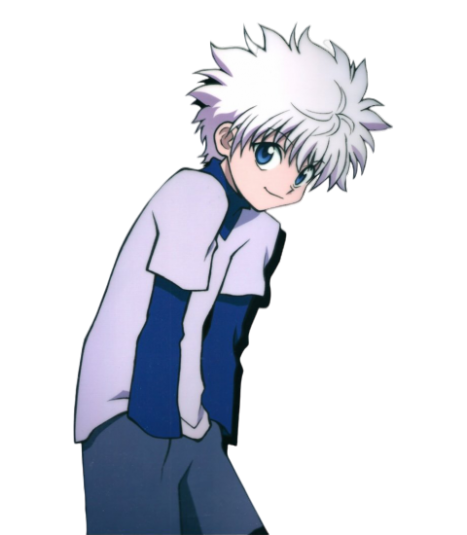

Sobre Killua
Killua é um dos protagonistas do anime Hunter x Hunter, nascido em uma famosa família de assassinos, os Zoldyck. Tendo apenas 14 anos de idade ele já tinha dominado muitas técnicas de extermínio desde muito novo, e foi criado para ser um dos melhores assassinos que a família já produziu. Durante a história podemos ver a máscara de Killua como um assassino sem coração ser lentamente quebrada para revelar uma criança sensível que anseia pelo amor.
Vamos ver os diferentes Killuas que o anime nos apresenta?
Descontraído
Quando está com seus amigos, o Killua age como uma criança normal, brincando e se divertindo.
